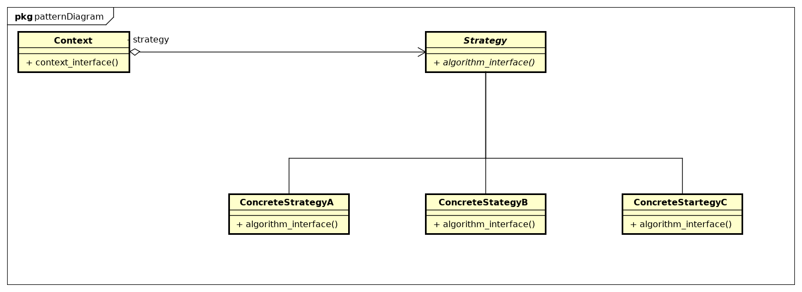

Strategy
Descrição:
Estratégia é um padrão de projeto que permite que sejam criadas várias classes encapsuladas umas das outras mas que podem ser trocadas, de forma que o algoritmo varie independentemente dos clientes que o utilizam.
Diagrama de Classes genérico do padrão:
Exemplo:
A ideia do exemplo apresentado no livro é criar um "simulador" de patos. Esse simu- lador terá diversos tipos de pato, que voam de formas diferentes e grasnos diferentes. A Estratégia é aplicada três vezes: - Para instanciar os vários tipos de quacks; - Para instancior os vários tipode de vôos e; - Para instanciar os vários tipos de patos. As classes abstratas são as classes FlyBehavior (que determina o modo de voo do pato), QuackBehavior (que determina o tipo de quack do pato) e Duck (que determina o tipo de pato a ser instanciado, com todas as suas características).